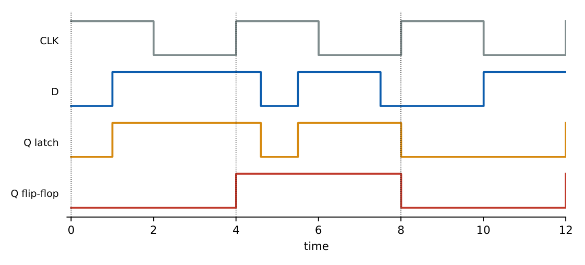

Latches and Flip-Flops
In this chapter
Characteristic equations and excitation tables of SR, JK, D and T elements, conversions between flip-flop types, race-around in the JK latch, and the difference between level-triggered latches and edge-triggered flip-flops.
7.1 Bistable elements
Two cross-coupled inverting gates form a bistable circuit with two stable states. Adding input gating gives the SR latch.
7.1.1 SR latch
| NOR latch (active-high \(S,R\)) | |||
|---|---|---|---|
| \(S\) | \(R\) | \(Q^+\) | Action |
| 0 | 0 | \(Q\) | hold |
| 0 | 1 | 0 | reset |
| 1 | 0 | 1 | set |
| 1 | 1 | 0 (both outputs 0) | forbidden |
A NAND latch uses active-low inputs \(\overline S,\overline R\): \(\overline S=\overline R=0\) is forbidden. When \(S=R=1\) is released simultaneously in a NOR latch the final state is unpredictable (race).
\(Q^+=S+\overline R\,Q\) with the constraint \(SR=0\).
7.1.2 Gated SR and D latch
A gated (clocked) SR latch accepts inputs only while \(EN=1\). The D latch sets \(S=D,\ R=\overline D\), removing the forbidden state: \(Q^+=D\) while enabled, \(Q^+=Q\) while disabled. It is transparent: the output follows \(D\) for the whole enable interval.
7.2 Edge-triggered flip-flops
A flip-flop samples its inputs only at an active clock edge (rising \(\uparrow\) or falling \(\downarrow\)). It can be built as a master–slave pair of latches with opposite enables: the master follows \(D\) while \(CLK=0\), the slave copies the master while \(CLK=1\).

SR: \(Q^+=S+\overline RQ\) (\(SR=0\)) D: \(Q^+=D\)
JK: \(Q^+=J\overline Q+\overline KQ\) T: \(Q^+=T\oplus Q=T\overline Q+\overline TQ\)
| \(J\) | \(K\) | \(Q^+\) (JK) | \(D\) | \(Q^+\) (D) | \(T\) | \(Q^+\) (T) |
|---|---|---|---|---|---|---|
| 0 | 0 | \(Q\) | 0 | 0 | 0 | \(Q\) |
| 0 | 1 | 0 | 1 | 1 | 1 | \(\overline Q\) |
| 1 | 0 | 1 | ||||
| 1 | 1 | \(\overline Q\) |
| \(Q\) | \(Q^+\) | \(S\ R\) | \(J\ K\) | \(D\) | \(T\) |
| 0 | 0 | 0 X | 0 X | 0 | 0 |
| 0 | 1 | 1 0 | 1 X | 1 | 1 |
| 1 | 0 | 0 1 | X 1 | 0 | 1 |
| 1 | 1 | X 0 | X 0 | 1 | 0 |
The excitation table answers: “to take the flip-flop from \(Q\) to \(Q^+\), what inputs are needed?” and is the starting point of counter and FSM design (Chapters 8–9).
7.3 Race-around condition
In a level-triggered JK latch with \(J=K=1\), the output toggles repeatedly for as long as the enable (clock) is high. The race-around occurs when the clock pulse width \(t_p>t_{pd}\) (the loop delay). Remedies: use edge triggering, a master–slave configuration, or keep \(t_p<t_{pd}<T\) (impractical). A D latch has no race-around because its output does not feed back to its own input path.
7.4 Asynchronous inputs and timing
PRESET (set) and CLEAR (reset) override the clock and force \(Q=1\) or \(Q=0\) immediately (usually active-low). For correct sampling the data must be stable for \(t_{su}\) before and \(t_h\) after the active edge (Chapter 11); the output changes \(t_{cq}\) after the edge.
7.5 Conversions
Use the characteristic equation of the target and the excitation table of the available device.
| Available | Wanted | Input logic |
|---|---|---|
| JK | T | \(J=K=T\) |
| JK | D | \(J=D,\ K=\overline D\) |
| D | T | \(D=T\oplus Q\) |
| T | D | \(T=D\oplus Q\) |
| SR | JK | \(S=J\overline Q,\ R=KQ\) |
| SR | D | \(S=D,\ R=\overline D\) |
| D | JK | \(D=J\overline Q+\overline KQ\) |
(a) A JK flip-flop with \(J=\overline Q\), \(K=Q\): \(Q^+=\overline Q\,\overline Q+\overline Q\,Q=\overline Q\), a toggle (divide-by-2).
(b) A T flip-flop with \(T=A\overline Q\): \(Q^+=A\overline Q\oplus Q=A+Q\) (set-dominant: once set by \(A\), it stays set).
(c) A D flip-flop with \(D=Q\oplus X\) behaves as a T flip-flop with \(T=X\).
7.5.1 Frequency division
Each toggle flip-flop (T=1) divides its clock by 2: a chain of \(n\) T flip-flops divides by \(2^n\) (ripple counter).
(i) \(S=R=1\) is forbidden for the SR latch and flip-flop; for JK it is the toggle case. (ii) A latch is level-sensitive and transparent; a flip-flop is edge-sensitive. (iii) The excitation table is not the characteristic table: it lists inputs for a desired transition, with don’t-cares. (iv) A negative-level latch is transparent when the clock is low, so a master–slave pair uses opposite polarities.
Remember the JK excitation pattern: \(0\to0\): \(JK=0X\); \(0\to1\): \(1X\); \(1\to0\): \(X1\); \(1\to1\): \(X0\). For T: input is simply \(Q\oplus Q^+\); for D: \(D=Q^+\). A conversion problem reduces to: target next-state equation \(\to\) required inputs.
7.6 GATE problems
Q1. For a NOR-based SR latch, the input combination \(S=R=1\) gives (A) \(Q=1\) (B) \(Q=0,\overline Q=1\) (C) both outputs 0 (D) toggle.
Q2. The JK excitation for \(Q=1\to Q^+=0\) is (A) \(J=0,K=X\) (B) \(J=X,K=1\) (C) \(J=1,K=X\) (D) \(J=X,K=0\).
Q3. To convert a D flip-flop into a T flip-flop, the input logic is (A) \(D=T\) (B) \(D=T\oplus Q\) (C) \(D=T\,Q\) (D) \(D=\overline T\).
Q4. Race-around occurs in (A) edge-triggered D flip-flop (B) level-triggered JK latch with \(J=K=1\) (C) master–slave JK (D) T flip-flop with \(T=0\).
Answers: Q1 (C). Q2 (B). Q3 (B). Q4 (B).
Q5. A JK flip-flop has \(J=A\) and \(K=\overline A\). Its behaviour is that of a (A) T flip-flop (B) D flip-flop with \(D=A\) (C) SR flip-flop (D) latch with enable \(A\).
Q6. A T flip-flop has \(T=A\overline Q\). The next state \(Q^+\) is (A) \(A\overline Q\) (B) \(A+Q\) (C) \(A\oplus Q\) (D) \(\overline AQ\).
Q7. A JK flip-flop is converted into an SR flip-flop with \(J=S\) and \(K=R\). For \(S=R=1\) the next state is (A) 0 (B) 1 (C) \(Q\) (D) \(\overline Q\).
Answers: Q5 (B): \(Q^+=A\overline Q+AQ=A\). Q6 (B): \(A\overline Q\oplus Q=A+Q\) (check \(A=1\): \(\overline Q\oplus Q=1\); \(A=0\): \(Q\)). Q7 (D): toggle.
Q8. A chain of 4 T flip-flops (T=1) is clocked at \(64\,\)kHz. Output frequency of the last stage (kHz): .
Q9. Minimum number of D flip-flops needed to build a counter with 37 distinct states: .
Answers: Q8: \(64/2^4=4\) kHz. Q9: \(2^6=64\ge37\) so 6.
Q10. Which statements are true? (A) A NAND SR latch uses active-low inputs. (B) A D latch is edge-triggered. (C) A master–slave JK flip-flop removes race-around. (D) A transparent latch follows its input while enabled.
Answers: Q10: (A), (C), (D).
T1. Write \(Q^+\) of a JK flip-flop. T2. Which flip-flop has the excitation \(T=Q\oplus Q^+\)? T3. SR \(\to\) D conversion?
Answers: T1: \(J\overline Q+\overline KQ\). T2: T flip-flop. T3: \(S=D\), \(R=\overline D\).
- SR: \(Q^+=S+\overline RQ\), \(SR=0\); D: \(Q^+=D\); JK: \(J\overline Q+\overline KQ\); T: \(T\oplus Q\).
- Latch = level, flip-flop = edge; master–slave from two latches; race-around fixed by edge triggering.
- Excitation: SR (0X,10,01,X0); JK (0X,1X,X1,X0); D = \(Q^+\); T = \(Q\oplus Q^+\).
- \(n\) toggle FFs divide the clock by \(2^n\).